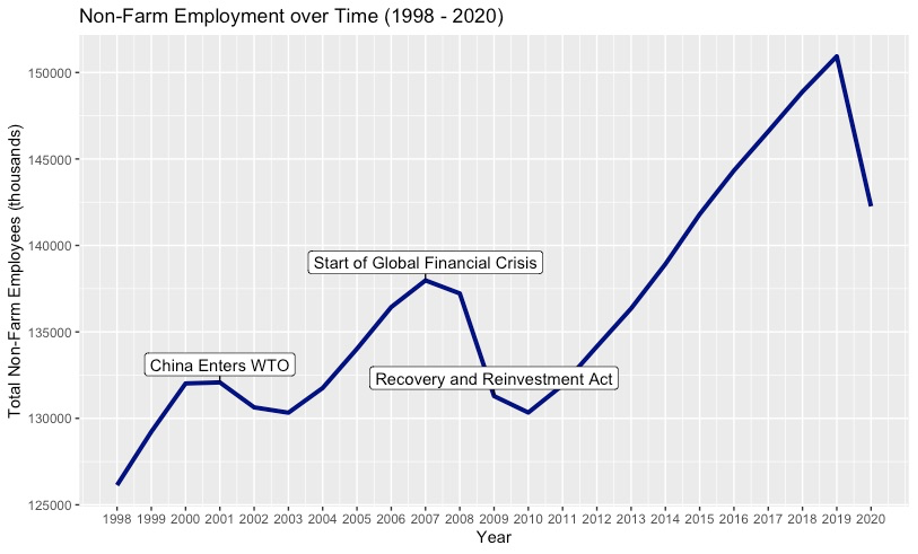

Manufacturing in the American Economy: A Preliminary Investigation
Background
The manufacturing sector in the United States has transcended the realm of pure economics, as discussions of its fate have permeated sociopolitical spheres with great intensity. A cursory glance at American politics will demonstrate that factory jobs seem to matter to Americans. Joe Biden and Donald Trump both dedicated hundreds of hours to campaigning through failing industrial towns and spent millions of dollars on advertisements promising to revitalize domestic manufacturing during their presidential bids. Meanwhile, scholars continue to debate the nature of this disappearing sector – some assert that jobs losses mark the shift towards a more prosperous post-industrial economy, while others believe that the decline illustrate a fundamental problem in American competitiveness. Although settling this issue will require research far beyond the scope of this project, these visualizations attempt to tell the story of manufacturing jobs in the United States and investigate key questions about national employment in order to ground this discussion in statistical reality. All data originates from the Bureau of Labor Statistics national and regional CES datasets.
Factory Jobs in the 21st Century


These time series show total non-farm employment over time and total manufacturing employment over time. First, we can see that the manufacturing workforce did indeed decline dramatically during the 2000s. From 2000 to 2010, employment in manufacturing fell from over 17 million jobs to less than 12 million. Its recovery in this past decade paled in comparison to the damage wrought in the previous decade, as employment had not even rebounded to 13 million by 2019. The first year of drastic decline, 2001, coincided with China’s entry into the World Trade Organization, a fact that many economists cite to implicate international competition as the source of manufacturing woes. The non-farm graph reflects this rapid decline, as its graph shows the loss of ~5,000,000 jobs in the same time period. Yet, overall, non-farm employment recovered in the years leading up to the Great Recession with steady growth from 2003 to 2007, whereas manufacturing merely declined at a slower rate. From 2007 to 2010, both non-farm employment and its manufacturing subset went into freefall due to the financial crisis. However, the domestic stimulus package failed to revitalize manufacturing, despite promises from politicians. Nevertheless, total non-farm employment increased steadily after 2010 and even surpassed pre-Recession levels after 2014. Clearly, the manufacturing problem does not simply stem from fluctuations in overall employment. It follows trends that diverge from other sectors.
Geographic Distribution

This choropleth projects data across the map of the United States and colors each state according to its manufacturing losses from 2000 to 2010, calculated as a percentage of the sector’s employment in 2000. Darker (bluer) colors signify greater percent losses, while lighter (yellower) shades indicate smaller ones. The plot addresses the degree of universality in the current manufacturing crisis. Very few states were spared from significant job losses in their manufacturing sectors. Much of the Northeast, South, and Midwest experienced nearly 30% or more reductions in employment. Most states experienced at least a 20% loss, though places such as North Dakota and Nevada seemed to have escaped much devastation, perhaps due to low manufacturing employment in general. This plot suggests that the previous national data did not come from a massive shock to a single state or region. Rather, manufacturing seems to have fallen drastically in most populous states and across several regions. Whatever forces are driving down employment in manufacturing appear to operate on a quasi-national scale. However, this graphic does not paint the full picture, since our variable calculates manufacturing losses in relation to its previous values and does not account for relative importance to the state economy. For example, a large state with a small manufacturing sector could absorb a 25% loss easily, but a similar sized state with a much larger sector could face serious financial difficulties with an equivalent percent loss. Either way, this plot shows that even in regions or states not known for their industrial centers, manufacturing employment deteriorated at the turn of the century, and, thus, this issue should certainly be examined on a national scale to an extent.
Effects on Local Population

This dumbbell plot attempts to contextualize declining employment within local populations by calculating manufacturing job losses per 100,000 people. The states with the highest losses per capita tended to be in the Midwest or South, while other regions fared better. Among the 15 states with a value of 2.5 jobs or more lost per 100,000 residents, most states came from the Midwest or Southern states bordering the Midwest. The only large Northeastern state in this category was Pennsylvania, which economically resembles its Midwestern neighbors in the Rust Belt far more than its Northeastern neighbors. This data suggests that a greater portion of populations in states such as Michigan, North Carolina, Indiana, and Ohio might have experienced economic misfortune or instability due to this downturn in manufacturing employment. As swing states, these places play critical roles in national elections, thus prompting further inquiry into the connection between manufacturing and politics.
The Post-Industrial Century

This plot addresses the question of how the two main sectors within the United States have changed over the last century. Since the primary sector (agriculture) accounts for such a small portion of the national workforce, only the secondary and tertiary sectors (services and manufacturing) are displayed here. For any given year, the sum of their two values will approximately equal total employment in the country. This graph shows that most of the growth in employment has stemmed from services since World War II. Manufacturing employment once comprised nearly half of the national workforce, but it employs only a small (though notable) minority of workers today. This observation is not a recent development, as this trend has arisen over the last several decades, not the last several years. In terms of my overall project, this plot answers the question "How important is manufacturing to the American workforce and national prosperity?". Clearly, this sector has employed only a small portion of Americans for a while. Now, it begs the question: if manufacturing employment has hardly employed people for years and growth was negligible in regard to the overall economy, why do people still care so much about bringing factory jobs back to the United States? Or perhaps more importantly, why have such powerful campaigns emerged to augment such a small portion of the workforce when employment seems to be clearly trending away from the secondary sector?
Services-led Growth


The first bar chart plots the percent growth for every major sector in terms of its total national employment in 1970. Every sector, even the goods-producing construction and mining/logging ones, increased during this time period, except for manufacturing. Within manufacturing itself, its two subcategories, durable and nondurable goods, both decreased. Nevertheless, manufacturing still employed more people in 2018 than either construction or mining/logging, as the second plot illustrates. However, employment still skews heavily towards services, as we already know. Trade, transportation, and utilities now employ the most people in the United States, followed closely by education and health, government, and professional/ business services. Financial activities, the most lucrative service industry, still ranks behind manufacturing in terms of total employment.
Services Employment by State

This geofacted plot displays employment in select services industries as a percentage of total state employment. Each state contains its own bar graph that shows its internal employment breakdown. Patterns appear to vary greatly across states and regions, with some places leading in trade and transportation while others lead in education. As expected, Northeastern states such as New York, Connecticut, and Massachusetts have high percentages for education and health services employment. Nevada seems to be the only state with a noticeably larger leisure and hospitality bar, mostly likely due to the economy of Las Vegas. Interestingly, in sparsely populated areas with much federally owned land such as New Mexico and Oklahoma, government services employ the highest percentage of all the chosen sectors. Though previous plots have showed us that services-employment has prevailed for many decades, this graphic gives us a better understanding of where certain sectors tend to be more prevalent.
Future work
Further research should also incorporate GDP data from the Bureau of Economic Analysis. Placing GDP trends alongside employment trends can paint an interesting picture, especially since manufacturing output has increased despite employment declines. This data would bring in questions about productivity growth, automation, and more. Additionally, political data could be used to illuminate the murky, yet intriguing, connection to voting.